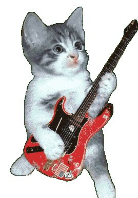

Характер и
моральные качества

Добрый, честный,
порядочный, справедливый, искренний, благородный, великодушный, щедрый, бескорыстный, альтруистичный,
милосердный, сострадательный, гуманный, отзывчивый, чуткий, душевный, сердечный, участливый, внимательный,
заботливый, неподкупный, принципиальный, совестливый, добросовестный, ответственный, надёжный, верный,
преданный, постоянный, честный, правдивый, искренний, открытый, прямодушный, чистосердечный, благодарный,
почтительный, тактичный, дипломатичный, деликатный, корректный, учтивый, галантный, воспитанный,
цивилизованный, толерантный, лояльный, уступчивый, смиренный, скромный, непритязательный, аскетичный, умеренный, бережливый,
экономный, рациональный, практичный, рассудительный, благоразумный, здравомыслящий, мудрый, дальновидный,
проницательный, проникновенный, понимающий, участливый, гуманный, человечный, сильный, волевой,
целеустремлённый, настойчивый, упорный, неутомимый, трудолюбивый, работящий, усердный, прилежный,
исполнительный, дисциплинированный, организованный, собранный, пунктуальный, аккуратный, старательный,
педантичный, щепетильный, основательный, серьёзный, решительный, смелый, отважный, мужественный, храбрый,
бесстрашный, неустрашимый, стойкий, выносливый, закалённый, крепкий, несгибаемый, непоколебимый,
самостоятельный, независимый, самодостаточный, уверенный, амбициозный, целеустремлённый, продуктивный,
эффективный, результативный, энергичный, деятельный, активный, инициативный, предприимчивый, находчивый,
изобретательный, креативный, творческий, умный, мудрый, разумный, толковый, здравомыслящий, рассудительный,
проницательный, прозорливый, дальновидный, эрудированный, начитанный, образованный, просвещённый,
интеллектуальный, развитой, мыслящий, аналитичный, критичный, любознательный, пытливый, inquisitive.

Мои хобби 😍

Актёрское
мастерство: невероятный талант воплощения на сцене определённую роль, владение навыками
сценической речи, движения, мимики, а также умения управлять эмоциями и достоверно передавать чувства
персонажа для погружения зрителя в создаваемый мир.
Танец:
профессионал безупречно владеет техникой танца, обладает развитой пластикой и артистичностью.
Гитара:
невероятный музыкальный талант! пока умеет играть только кузнечика.
Программист:
дай бог сдаст эту лабу.
Мамкин
оверклокер: Чуть не спалил видеокарту

Братва ✊

Мой город 🏰
Жлобин
"
Котик, для поднятия
наверх


.jpg)